Virtual tree
引入
???+ note "「SDOI2011」消耗战" 在一场战争中，战场由 $n$ 个岛屿和 $n-1$ 个桥梁组成，保证每两个岛屿间有且仅有一条路径可达．现在，我军已经侦查到敌军的总部在编号为 $1$ 的岛屿，而且他们已经没有足够多的能源维系战斗，我军胜利在望．已知在其他 $k$ 个岛屿上有丰富能源，为了防止敌军获取能源，我军的任务是炸毁一些桥梁，使得敌军不能到达任何能源丰富的岛屿．由于不同桥梁的材质和结构不同，所以炸毁不同的桥梁有不同的代价，我军希望在满足目标的同时使得总代价最小．
侦查部门还发现，敌军有一台神秘机器．即使我军切断所有能源之后，他们也可以用那台机器．机器产生的效果不仅仅会修复所有我军炸毁的桥梁，而且会重新随机资源分布（但可以保证的是，资源不会分布到 $1$ 号岛屿上）．不过侦查部门还发现了这台机器只能够使用 $m$ 次，所以我们只需要把每次任务完成即可．
对于所有数据，$2\le n\le 2.5\times 10^5,1\le m\le 5\times 10^5,\sum k_i\le 5\times 10^5,1\le k_i\le n-1$．
朴素做法
对于上面那题，我们不难发现——如果树的点数很少，那么我们可以直接跑 DP．
首先我们称某次询问中被选中的点为——「关键点」．
设 $Dp(i)$ 表示——使 $i$ 不与其子树中任意一个关键点连通的 最小代价．
设 $w(a,b)$ 表示 $a$ 与 $b$ 之间的边的权值．
则枚举 $i$ 的儿子 $v$：
- 若 $v$ 不是关键点：$Dp(i)=Dp(i) + \min {Dp(v),w(i,v)}$；
- 若 $v$ 是关键点：$Dp(i)=Dp(i) + w(i,v)$．
很好，这样我们得到了一份 $O(nq)$ 的代码．
听起来很有意思．
优化做法
我们不难发现——其实很多点是没有用的．以下图为例：
如果我们选取的关键点是：
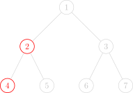
图中只有两个红色的点是 关键点，而别的点全都是「非关键点」．
对于这题来说，我们只需要保证红色的点无法到达 $1$ 号节点就行了．
通过肉眼观察可以得出结论——$1$ 号节点的右子树（虽然实际上可能有多个子树，但这里只有两个子树，所以暂时这么称呼了）一个红色节点都没有，所以没必要去 DP 它．
观察题目给出的条件，红色点（关键点）的总数是与 $n$ 同阶的，也就是说实际上一次询问中红色的点对于整棵树来说是很稀疏的，所以如果我们能让复杂度由红色点的总数来决定就好了．
因此我们需要 浓缩信息，把一整颗大树浓缩成一颗小树．
虚树 Virtual Tree
由此我们引出了 「虚树」 这个概念．
我们先直观地来看看虚树的样子．
下图中，红色结点是我们选择的关键点．红色和黑色结点都是虚树中的点．黑色的边是虚树中的边．


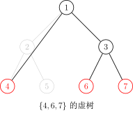
因为任意两个关键点的 LCA 也是需要保存重要信息的，所以我们需要保存它们的 LCA，因此虚树中不一定只有关键点．
不难发现虚树中祖先后代的关系并不会改变．（就是不会出现原本 $a$ 是 $b$ 的祖先结果后面 $a$ 变成 $b$ 的后代了之类的鬼事）
但我们不可能 $O(k^2)$ 暴力枚举 LCA，所以我们不难想到——首先将关键点按 DFS 序排序，然后排完序以后相邻的两个关键点（相邻指的是在排序后的序列中下标差值的绝对值等于 1）求一下 LCA，并把它加入虚树．
我们的当务之急就是如何构造虚树．
在提出方案之前，我们先确认一个事实——在虚树里，只要保证祖先后代的关系没有改变，就可以随意添加节点．
也就是，如果我们乐意，我们可以把原树中所有的点都加入虚树中，也不会导致 WA（虽然会导致 TLE）．
因此，我们为了方便，可以首先将 $1$ 号节点加入虚树中，并且并不会影响答案．
第一种构造过程：二次排序 + LCA 连边
因为多个节点的 LCA 可能是同一个，所以我们不能多次将它加入虚树．
非常直观的一个方法是：
- 将关键点按 DFS 序排序；
- 遍历一遍，任意两个相邻的关键点求一下 LCA，并且判重；
- 然后根据原树中的祖先后代关系建树．
具体实现上，在 关键点序列 上，枚举 相邻的两个数，两两求得 LCA 并且加入序列 $A$ 中．
因为 DFS 序的性质，此时的序列 $A$ 已经包含了 虚树中的所有点，但是可能有重复．
所以我们把序列 $A$ 按照 DFS 序 从小到大排序并去重．
最后，在序列 $A$ 上，枚举 相邻 的两个 点编号 $x,y$，求得它们的 LCA 并且连接 $\operatorname{LCA}(x,y),y$，虚树就构造完成了．
为什么连接 $\operatorname{LCA}(x,y)$ 和 $y$ 可以做到不重不漏呢？
??? note "证明" 如果 $x$ 是 $y$ 的祖先，那么 $x$ 直接到 $y$ 连边．因为 DFS 序保证了 $x$ 和 $y$ 的 DFS 序是相邻的，所以 $x$ 到 $y$ 的路径上面没有关键点．
如果 $x$ 不是 $y$ 的祖先，那么就把 $\operatorname{LCA}(x,y)$ 当作 $y$ 的的祖先，根据上一种情况也可以证明 $\operatorname{LCA}(x,y)$ 到 $y$ 点的路径上不会有关键点．
所以连接 $\operatorname{LCA}(x,y)$ 和 $y$，不会遗漏，也不会重复．
另外第一个点没有被一个节点连接会不会有影响呢？因为第一个点一定是这棵树的根，所以不会有影响，所以总边数就是 $m-1$ 条．
因为至少要两个实点才能够召唤出来一个虚点，再加上一个根节点，所以虚树的点数就是实点数量的两倍．
时间复杂度 $O(m\log n)$，其中 $m$ 为关键点数，$n$ 为总点数．
实现
int dfn[MAXN];
int h[MAXN], m, a[MAXN], len; // 存储关键点
bool cmp(int x, int y) {
return dfn[x] < dfn[y]; // 按照 dfs 序排序
}
void build_virtual_tree() {
sort(h + 1, h + m + 1, cmp); // 把关键点按照 dfs 序排序
for (int i = 1; i < m; ++i) {
a[++len] = h[i];
a[++len] = lca(h[i], h[i + 1]); // 插入 lca
}
a[++len] = h[m];
sort(a + 1, a + len + 1, cmp); // 把所有虚树上的点按照 dfs 序排序
len = unique(a + 1, a + len + 1) - a - 1; // 去重
for (int i = 1, lc; i < len; ++i) {
lc = lca(a[i], a[i + 1]);
conn(lc, a[i + 1]); // 连边，如有边权 就是 distance(lc,a[i+1])
}
}
其实这样就足以构造一棵虚树了．
第二种构造过程：使用单调栈
如何使用单调栈构造虚树？
首先我们要明确一个目的——我们要用单调栈来维护一条虚树上的链．
也就是一个栈里相邻的两个节点在虚树上也是相邻的，而且栈是从底部到栈首单调递增的（指的是栈中节点 DFS 序单调递增），说白了就是某个节点的父亲就是栈中它下面的那个节点．
首先我们在栈中添加节点 $1$．
然后接下来按照 DFS 序从小到大添加关键节点．
假如当前的节点与栈顶节点的 LCA 就是栈顶节点的话，则说明它们是在一条链上的．所以直接把当前节点入栈就行了．
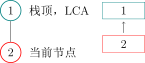
假如当前节点与栈顶节点的 LCA 不是栈顶节点的话：
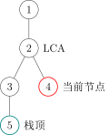
这时，当前单调栈维护的链是：
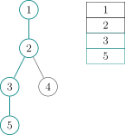
而我们需要把链变成：
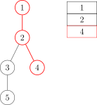
那么我们就把用虚线标出的结点弹栈即可，在弹栈前别忘了向它在虚树中的父亲连边．
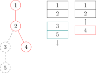
假如弹出以后发现栈首不是 LCA 的话要让 LCA 入栈．
再把当前节点入栈就行了．
下面给出一个具体的例子．假设我们要对下面这棵树的 4，6 和 7 号结点建立虚树：
那么步骤是这样的：
- 将 3 个关键点 $6,4,7$ 按照 DFS 序排序，得到序列 $[4,6,7]$．
- 将 $1$ 入栈．
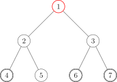
我们用红色的点代表在栈内的点，青色的点代表从栈中弹出的点．
- 取序列中第一个作为当前节点，也就是 $4$．再取栈顶元素，为 $1$．求 $1$ 和 $4$ 的 LCA：$LCA(1,4)=1$．
- 发现 $LCA(1,4)=$ 栈顶元素，说明它们在虚树的一条链上，所以直接把当前节点 $4$ 入栈，当前栈为 $4,1$．
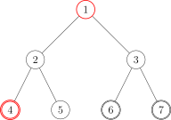
- 取序列第二个作为当前节点，为 $6$．再取栈顶元素，为 $4$．求 $6$ 和 $4$ 的 LCA：$LCA(6,4)=1$．
- 发现 $LCA(6,4)\neq$ 栈顶元素，进入判断阶段．
- 判断阶段：发现栈顶节点 $4$ 的 DFS 序是大于 $LCA(6,4)$ 的，但是次大节点（栈顶节点下面的那个节点）$1$ 的 DFS 序是等于 LCA 的（其实 DFS 序相等说明节点也相等），说明 LCA 已经入栈了，所以直接连接 $1\to4$ 的边，也就是 LCA 到栈顶元素的边．并把 $4$ 从栈中弹出．
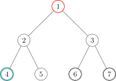
- 结束了判断阶段，将 $6$ 入栈，当前栈为 $6,1$．
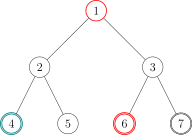
- 取序列第三个作为当前节点，为 $7$．再取栈顶元素，为 $6$．求 $7$ 和 $6$ 的 LCA：$LCA(7,6)=3$．
- 发现 $LCA(7,6)\neq$ 栈顶元素，进入判断阶段．
- 判断阶段：发现栈顶节点 $6$ 的 DFS 序是大于 $LCA(7,6)$ 的，但是次大节点（栈顶节点下面的那个节点）$1$ 的 DFS 序是小于 LCA 的，说明 LCA 还没有入过栈，所以直接连接 $3\to6$ 的边，也就是 LCA 到栈顶元素的边．把 $6$ 从栈中弹出，并且把 $LCA(6,7)$ 入栈．
- 结束了判断阶段，将 $7$ 入栈，当前栈为 $1,3,7$．
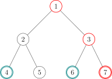
- 发现序列里的 3 个节点已经全部加入过栈了，退出循环．
- 此时栈中还有 3 个节点：$1,3,7$，很明显它们是一条链上的，所以直接链接：$1\to3$ 和 $3\to7$ 的边．
- 虚树就建完啦！
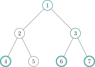
我们接下来将那些没入过栈的点（非青色的点）删掉，对应的虚树长这个样子：
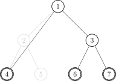
其中有很多细节，比如用邻接表存图的方式存虚树的话，需要清空邻接表．但是直接清空整个邻接表是很慢的，所以我们在 有一个从未入栈的元素入栈的时候清空该元素对应的邻接表 即可．
时间复杂度同样为 $O(m\log n)$（因为有排序），其中 $m$ 为关键点数，$n$ 为总点数．
实现
建立虚树的 C++ 代码大概长这样：
???+ note "代码实现" ```cpp bool cmp(const int x, const int y) { return id[x] < id[y]; }
void build() {
sort(h + 1, h + k + 1, cmp);
sta[top = 1] = 1, g.sz = 0, g.head[1] = -1;
// 1 号节点入栈，清空 1 号节点对应的邻接表，设置邻接表边数为 0
for (int i = 1, l; i <= k; ++i)
if (h[i] != 1) {
// 如果 1 号节点是关键节点就不要重复添加
l = lca(h[i], sta[top]);
// 计算当前节点与栈顶节点的 LCA
if (l != sta[top]) {
// 如果 LCA 和栈顶元素不同，则说明当前节点不在当前栈所存的链上
while (id[l] < id[sta[top - 1]])
// 当次大节点的 Dfs 序大于 LCA 的 Dfs 序
g.push(sta[top - 1], sta[top]), top--;
// 把与当前节点所在的链不重合的链连接掉并且弹出
if (id[l] > id[sta[top - 1]])
// 如果 LCA 不等于次大节点（这里的大于其实和不等于没有区别）
g.head[l] = -1, g.push(l, sta[top]), sta[top] = l;
// 说明 LCA 是第一次入栈，清空其邻接表，连边后弹出栈顶元素，并将 LCA
// 入栈
else
g.push(l, sta[top--]);
// 说明 LCA 就是次大节点，直接弹出栈顶元素
}
g.head[h[i]] = -1, sta[++top] = h[i];
// 当前节点必然是第一次入栈，清空邻接表并入栈
}
for (int i = 1; i < top; ++i)
g.push(sta[i], sta[i + 1]); // 剩余的最后一条链连接一下
return;
}
```
于是我们就学会了虚树的建立了！
对于消耗战这题，直接在虚树上跑最开始讲的那个 DP 就行了，我们等于利用了虚树排除了那些没用的非关键节点！仍然考虑 $i$ 的所有儿子 $v$：
- 若 $v$ 不是关键点：$Dp(i)=Dp(i) + \min {Dp(v),w(i,v)}$
- 若 $v$ 是关键点：$Dp(i)=Dp(i) + w(i,v)$
于是这题很简单就过了．